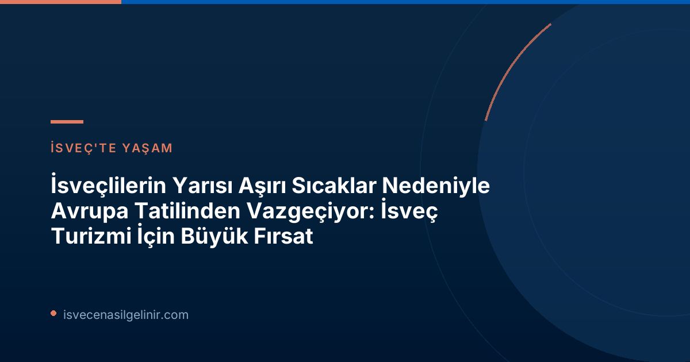

Aşırı Sıcaklar Tatil Alışkanlıklarını Nasıl Değiştiriyor?
Avrupa'da yaşanan rekor sıcaklıklar ve buna bağlı gelişen orman yangınları, seyahat tercihlerini doğrudan etkiliyor. SVT'nin Indikator adına yaptırdığı yeni bir kamuoyu araştırması, İsveç toplumunda bu konuda belirgin bir değişimin sinyallerini veriyor. Araştırmanın detaylarına göre:| Tatil Eğilimi | Oran |
|---|---|
| Aşırı sıcaktan dolayı Avrupa'da yaz tatiline daha az istekli | %48 |
| - Çok daha az istekli | %26 |
| - Biraz daha az istekli | %22 |
| Aşırı sıcaktan dolayı Avrupa'da yaz tatiline ne az ne çok istekli (nötr) | %36 |
| Aşırı sıcaktan dolayı Avrupa'da yaz tatiline daha istekli | %9 |
İsveç Turizmi İçin Beklenmedik Bir Fırsat Kapısı
Seyahat uzmanı Lottie Knutson, anket sonuçlarına şaşırmadığını belirtiyor. Knutson'a göre, bu durum İsveç'in kendi turizm sektörü için "inanılmaz büyük" sonuçlar doğuracak ve ülkeye ekonomik olarak kazandırabilir.Uzman Görüşü: Lottie Knutson'dan Değerlendirmeler
- Akdeniz'e yapılan son dakika seyahatlerinin fiyatları oldukça düşük seyrediyor. Buna karşın, kuzey enlemlerine yapılan düzenli uçuşlar daha pahalı.
- Bu eğilim, seyahat ve turizm sektörü için "çok büyük" sonuçlar doğuracak.
- İsveç turizminin GSYH'deki payı, hâlihazırda %2.8 olup, bu oranın artması bekleniyor.
- Gelecekte daha fazla kişi en sıcak aylarda Akdeniz'den kaçınarak ilkbahar ve sonbahar aylarında seyahat etmeyi tercih edecek.
- Birçok kişi İsveç içinde kalmayı arzu edecek.
- Knutson, değişen bu tutumları İsveç turizmi için "muazzam bir avantaj" ve "fantastik bir fırsat" olarak nitelendiriyor.
Yaş Grupları Arasındaki Belirgin Farklar
Araştırma, tatil tercihlerindeki bu değişimin yaş gruplarına göre farklılıklar gösterdiğini de ortaya koyuyor. Özellikle 65 yaş ve üzeri kişiler ile 18-29 yaş arası gençler arasında belirgin bir ayrım var:| Yaş Grubu | Aşırı Sıcak Nedeniyle Avrupa'da Yaz Tatiline "Çok Daha Az İstekli" Oranı |
|---|---|
| 65 yaş ve üzeri | %39 |
| 18-29 yaş arası | %10 |
İklim Değişikliği ve Sürdürülebilir Turizmin Önemi
Bu tür haberler, iklim değişikliğinin günlük hayatımız ve ekonomik faaliyetler üzerindeki etkilerini bir kez daha gözler önüne seriyor. Orman yangınları ve aşırı hava olayları gibi iklim kriziyle bağlantılı konular, küresel ısınmanın gerçekliğini hatırlatıyor. İsveç'in "sürdürülebilir turizm" hedefleri doğrultusunda, bu yeni oluşan fırsatları çevreye duyarlı bir şekilde değerlendirmesi büyük önem taşıyor. Turizm sektörünün, değişen iklim koşullarına uyum sağlaması ve gezginlere çevre dostu alternatifler sunması gerekmektedir.Gelecekteki Tatil Trendleri ve İsveç'in Rolü
İklim değişikliği ve sıcak hava dalgalarının artmasıyla birlikte, gezginlerin daha serin ve doğa dostu destinasyonlara yönelmesi bekleniyor. Bu bağlamda, İsveç'in doğal güzellikleri, temiz havası ve sürdürülebilir yaşam tarzı, gelecekte daha fazla turisti kendine çekebilir. Bu durum, sadece yaz aylarında değil, ilkbahar ve sonbahar dönemlerinde de ülkenin turizm potansiyelini artırabilir.Referanslar:
- SVT Nyheter Inrikes: Aşırı Sıcaklar Nedeniyle Avrupa Tatilinden Vazgeçen İsveçliler
İsveç'te Kariyer ve Yaşam Fırsatları
İsveç'te yaşamak, çalışmak veya eğitim görmek mi istiyorsunuz? Göçmenlik süreçleri, vatandaşlık başvuruları ve güncel gelişmeler hakkında kapsamlı bilgiler için rehberlerimizi inceleyin.